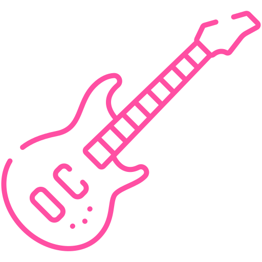
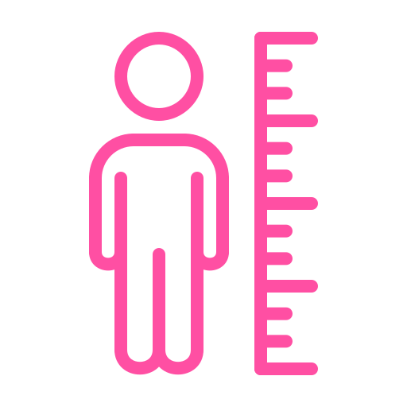
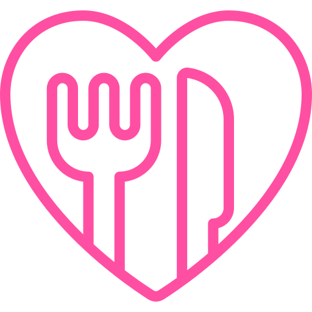

Personagens
Conheça a Kessoku Band
Hitori
Nijika
Ryo
Kita
Hitori Gotoh
Guitarrista

Hitori Gotoh(Bocchi) é uma estudante extremamente tímida e com forte ansiedade social, mas que esconde um talento excepcional na guitarra. Após passar anos praticando sozinha trancada em seu armário e postando vídeos na internet como "guitarhero", ela foi convidada a se juntar à Kessoku Band, iniciando sua jornada para superar seus medos e se conectar com os outros através da música.
Informações Gerais
Aniversário: 21 dee fevereiro

Altura: 156cm
Instrumento: Guitarra

Comida Favorita: Yakisoba Pan
Tipo Sanguíneo: O
Ano Escolar: 1° Ano do Ensino Médio